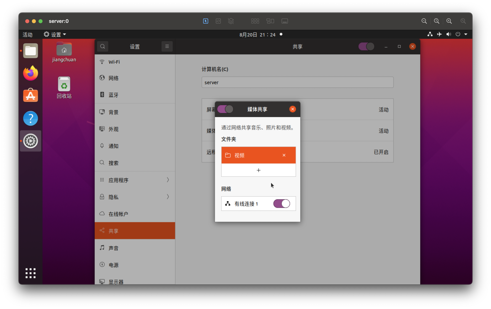
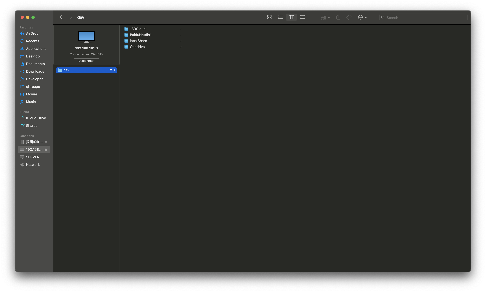
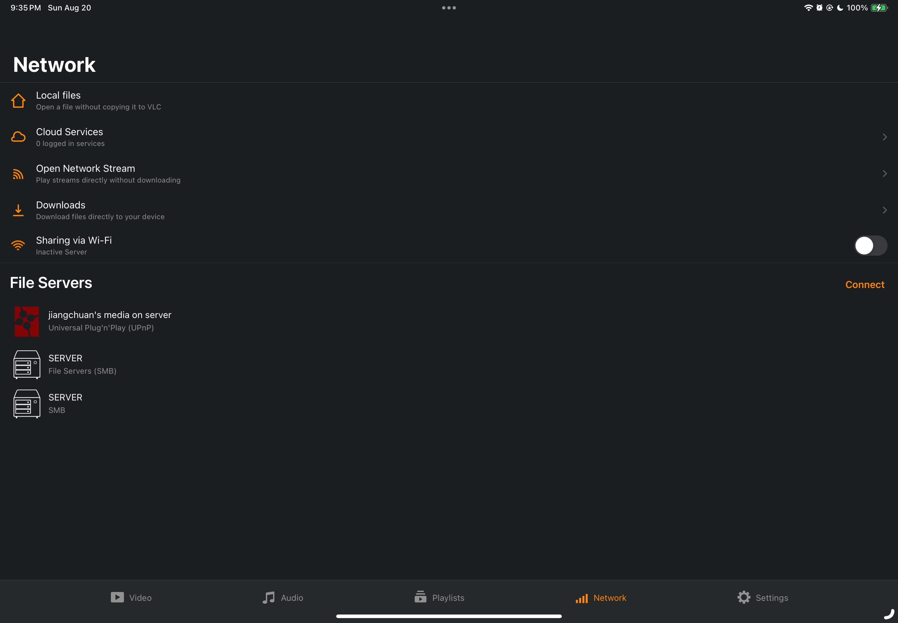
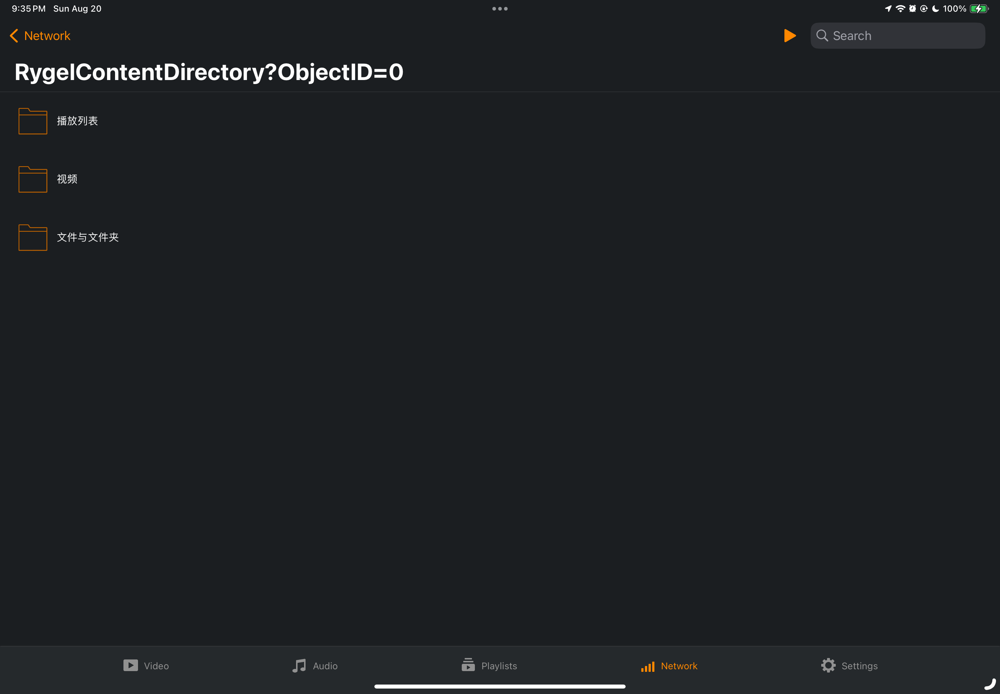

20230820
怎么突然复活了
以我的特性在家憋着自然会发电（
然后开始轰炸别人，但这么做是不对的，当然去提问箱轰炸更加不妥当，所以还是写博客比较合适。
至于是谁，懂的都懂（没人懂
写点什么
考虑选材，就开始思考这几天我都干了什么
无非是
- 学物理
- 吃饭
- 整活
既然有三个素材就不用担心没得写了
所以作为灌水文章，我决定略写物理，详写 2 和 3
正文
物理
得知 0902 要预赛，便稍勤奋多学一点
虽脑子比较好使学得很快，奈何学的时间太短，也很难有什么好成绩
反而为此时常发电，第三部分具体说
既然灌水就不聊知识，谈谈别的吧
美食
待在家，吃饭就成为了一项有趣的项目
鉴于我不太正常的脑子，就很常干出些奇怪的事情
今天就是个很好的例子
先是今天下雨，我莫名其妙反而在雨天出去溜达
回来后，开始吃晚饭
向妈妈询问吃什么
- 绿豆粥
- 烤鸡腿
- 发面饼
正合我意！既然都是我爱吃的便多吃了一些
由于爱吃，再加上我奇怪的光盘意识（不论上多少都要吃掉
我一个人吃掉了两张饼、一锅粥、一盘烤鸡腿（
吃完肚子就撑得走不了路了，所以我索性睡了一觉（睡醒就消化了 qwq
以小见大，可见我的智力水平堪忧
魔怔的整活
详写部分登场！
本部分较为复杂，所以我还是加个索引
看视频
本着不重不漏的原则，我按照逆天程度低高来排序
看 YouTube 良久有许多好看的视频（不仅 YouTube 而且视频也有许多不正经的 doge
我决定闲来无事搭建一个家庭个人影像库，本地存储视频
已有前期储备
- 报废后被刷 linux(ubuntu) 当做服务器的旧电脑 （小学的 ppt 都是用这台电脑做的
- 在服务器上搭建的网盘
- 在 Mac 上有 iina，移动端有 vlc 作为视频播放器
- Mac 可以直接挂载网盘 alist 的 webdav
实施
设置媒体共享

图片是用 Mac 远程连接的服务器（
选取要分享的文件夹，使得此文件夹恰好也被 alist 分享
管理视频
下载视频最方便的当然是 Mac 了
所以可以直接用 webdav 管理文件夹

找到文件夹直接丢进去视频就行(气急败坏，懒得写了
收看
首先最简单的是 Mac 直接在 Finder iina 打开即可
而移动端就比玄学了
这就要用 vlc 搭配前面开启的媒体共享了


找到视频享用即可
但这个不太稳定，会莫名消失，我也没想到解决办法（
总之是可行的
逆天部分
前面的部分虽然也比较废话，但还算正经，接下来我要发电了（
part 2 有空再写